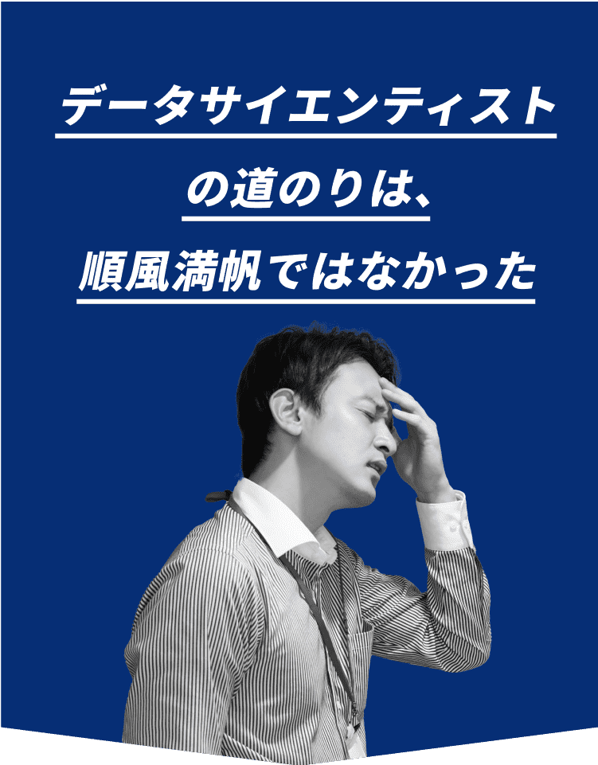

私がAI・データ分析の世界に飛び出してから、これまで様々な苦労や失敗をしてきました。
特にPythonによるプログラミングスキル、機械学習や統計学の知識を全く実務で使いこなせず、自信を持てなくなることも多かったです。
ただ、今はこうして書籍の出版や、メディア出演などをさせていただくようになり、AI・データサイエンスの分野で徐々に私の名前を知っていただく機会が増えました。
ここまで私が来れたのは「インプット」「アウトプット」を継続していたからです。
インプットの重要性
まずはインプットで、土台となる基礎を固める必要があります。
私も初めは、データサイエンススクールでの授業内容を頭に叩き込み、本も読み漁りました。それを継続することで、プログラミングやAIに関して、体系的に理解ができるようになっていったのです。
アウトプットの重要性
そして、今度はそれをアウトプットすることで、さらに知識を定着させることができました。
例えば、実務はもちろん、技術ブログを書いたり、勉強会の開催や講師としての登壇なども、アウトプットには最高の場になります。
初めての場は常に緊張や不安がありますが、その緊張と不安が自分を成長させます。それを継続することで、アウトプットの量も質も、相乗して高くなっていくのです。
そのようなことを繰り返すうちに、AIに関する論文投稿・書籍の執筆・メディア出演など、より外部に目立つ活動もできるようになってきて、ここまでやってくることができました。
わずか1分で
予約可能な無料説明会!
AI（人工知能）・データサイエンスで何を学べばよいか?
どういったキャリアステップがあるか？、まずはそういった話だけでも、相談に乗ります!